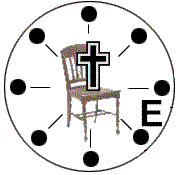
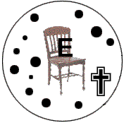

A Bíblia
diz que há três espécies de pessoas:
1. O Homem Natural
(aquele que ainda não recebeu a Cristo)
"O homem que não tem o Espírito não aceita as coisas que vêm do Espírito de
Deus, pois lhe são loucura; e não é capaz de entendê-las, porque elas são discernidas
espiritualmente" (1 Coríntios 2:14)
 |
VIDA
CONTROLADA PELO "EU"
O "EU" no centro da vida.
CRISTO do lado de fora da vida.
Ações e atitudes controladas pelo "EU"
, resultando em discórdias e frustrações. |
2. O Homem Espiritual
(aquele recebeu a Cristo e tem a sua vida dirigida pelo
Espírito de Deus)
"O homem espiritual discerne todas as coisas" (1 Coríntios 2:15,16).
|  |
VIDA CONTROLADA POR CRISTO
CRISTO no centro da vida.
O "EU" fora do centro.
Ações a atitudes controladas por CRISTO,
resultando em harmonia com o plano de Deus. |
3. O Homem Carnal
(aquele que já recebeu a Cristo, mas vive em
derrota, porque confia em seus próprios esforços para viver a vida cristã)
"Irmãos, não lhes pude falar como a espirituais, mas como a carnais, como a
crianças em Cristo. Dei-lhes leite e não alimento sólido, pois vocês não estavam em
condições para isso. De fato, vocês ainda não estão em condições, porque ainda são
carnais. Pois, visto que há inveja e divisão entre vocês, não estão sendo carnais e
agindo como mundanos? (1 Coríntios 3:1-3)
|  |
VIDA
CONTROLADA PELO "EU"
O "EU" entronizado.
CRISTO destronado.
Ações e atitudes controladas pelo "EU",
resultando em discórdias e frustrações. |
1. Deus
Providenciou para nós Uma Vida Cristã Frutífera e Abundante |
- Disse Jesus: "Eu vim para que tenham vida, e a tenham
plenamente." (João10:10)
- "Eu sou a videira; vocês são os ramos. Se alguém
permanecer em mim e eu nele, esse dá muito fruto; pois sem mim, vocês não podem fazer
coisa alguma." (João 15:5)
- "Mas o fruto do Espírito é amor, alegria, paz, paciência,
amabilidade, bondade, fidelidade, mansidão e domínio próprio. Contra essas coisas não
há lei." (Gálatas 5:22,23).
- "Mas receberão poder quando o Espírito Santo descer sobre
vocês, e serão minhas testemunhas em Jerusalém, em toda a Judéia e Samaria, e até os
confins da terra" (Atos 1:8)O Homem Espiritual - Algumas
características pessoais resultantes da sua confiança em Deus:
É Cristocêntrico
É dirigido pelo Espírito Santo
Conduz outros a Cristo
Possui vida efetiva de Oração
Conhece a Palavra de Deus
Confia em Deus
Obedece a Deus |
|
Amor
Alegria
Paz
Paciência
Bondade
Fé
Fifelidade
Mansidão
Domínio próprio |
À medida que o cristão vai confiando no Senhor em todos os detalhes da sua existência e
segundo a sua maturidade em Cristo, essas características se manifestam em sua vida.
Aquele que está apenas começando a compreender o ministério do Espírito Santo não
deve desanimar, se não é tão frutífero como cristãos mais maturos que já
experimentaram esta verdade por um período mais extenso.
Por que a maior parte dos cristãos não está experimentando esta "vida
abundante"?
2. O Homem Carnal
não pode experimentar a vida cristã abundante e frutífera |
O Homem carnal confia em seus próprios esforços para viver a
vida cristã:
- Ou ele não está informado a respeito do amor de Deus, seu perdão e
poder ou se esqueceu deles (Romanos 5:8-10; Hebreus 10:1-25; 1 João 1; 1 João 2:1-3; 2 Pedro 1:9; Atos 1:8).
- Tem uma experiência espiritual cheia de altos e baixos.
- Não entende a si mesmo - deseja fazer o que é certo, mas não
consegue.
- Deixa de receber o poder do Espírito Santo para viver a vida
cristã.
(1 Coríntios 3:1-3; Romanos 7:15-24; 8:7; Gálatas 5:16-18)
O Homem Carnal - Algumas ou todas as caracterísiticas seguintes identificam o
cristão que não confia plenamente em Deus:
ignorância de sua herança espiritual
Incredulidade
Desobediência
Perda do amor para com Deus e com os outros
Vida pobre de oração
Falta de desejo de estudar a Bíblia |
|
Atitudes Legalistas
Pensamentos impuros
Ciúmes
Inveja
Preocupação
Desânimo
Espírito de Crítica
Frustração
Falta de Propósito na vida |
(A pessoa que se declara cristã mas continua na prática do pecado, deve compenetrar-se
de que talvez não seja verdadeiramente cristã, de acordo com (1 João 2:3; 3:6, 9; Efésios 5:5). Clique aqui para
obter a certeza de que você é realmente um cristão.
A terceira verdade, nos oferece a única solução deste
problema...
3. Jesus prometeu a
vida abundante e frutífera como resultado da plenitude (controle
e poder) do Espírito Santo |
A vida cheia do Espírito é a vida dirigida por
Cristo, pela qual Cristo vive sua vida em nós e através de nós, no poder do Espírito
Santo (João 15).
- Uma pessoa se torna cristã através do poder do Espírito Santo,
conforme João 3:1-8. Desde o nascimento espiritual de
novo o Espírito Santo permanentemente no cristão (João1:12; Colossenses 2:9, 10; João14:16,17). Embora o Espírito Santo habite em
todos os cristãos, nem todos os cristãos são cheios (vivem sob o controle e poder) do
Seu poder.
- O Espírito Santo é a fonte da vida transbordante (João 7:37-39).
- O Espírito Santo veio para glorificar a Cristo (João 16:1-15). Quando alguém é cheio do
Espírito Santo, ele é um verdadeiro discípulo de Cristo.
- Antes de ascender aos céus, Cristo prometeu enviar-nos o poder do
Espirito Santo para nos capacitar a fim de sermos suas testemunhas (Atos 1:1-9).
Então, como alguém pode
ser cheio do Espírito Santo?
4. Somos cheios do
Espírito Santo pela fé; Podemos, então, experimentar a vida abundante e frutífera que
Cristo prometeu a todo cristão |
Você pode ser cheio do Espírito Santo agora
mesmo, se você:
- Desejar sinceramente ser controlado e fortalecido pelo Espírito
Santo (Mateus 5:6; João 7:37-39).
- Confessar os seus pecados. Pela fé agradeça a Deus o fato de
lhe haver perdoado todos os pecado - passados, presentes e futuros - porque Cristo morreu
por você (Colossenses 2:13-15; 1 João 1; 2:1-3; Hebreus10:1-17).
- Apresente cada área de sua vida a Deus (Romanos 12:1-2).
- Pela fé tome posse da plenitude do Espírito Santo, de acordo
com:
1. Sua Ordem - Seja
cheio do Espírito Santo. "E não vos embriagueis com vinho, em que há contenda, mas
enchei-vos do Espírito" (Efésios 5:18)
2. Sua Promessa - Ele
responderá quando orarmos de acordo com Sua vontade. "E esta é a confiança que
temos Nele, que, se perdirmos alguma coisa, segundo a sua vontade, ele nos ouve. E, se
sabemos que ele nos ouve em tudo o que pedimos, sabemos que alcançamos as petições que
lhe fizemos". (1 João 5:14,15)
A fé pode ser expressa através da oração…
| Como orar com fé para
ser cheio do Espírito Santo Somos cheios do Espírito
Santo pela fé. Entretanto, a verdadeira oração é um modo de expressar a sua fé.
Sugerismo a seguinte oração:
"Querido Pai, eu preciso de Ti. Reconheço que tenho
procurado dirigir a minha própria vida e como resultado, tenho pecado contra Ti. Te
agradeço pelo perdão dos meus pecados através da morte de Cristo na cruz. Agora convido
a Cristo para tomar novamente a direção da minha vida. Enche-me do teu Espírito como
ordenastes que eu fosse cheio e como prometeste em Tua Palavra que farias se pedisse com
fé. Peço isto no nome de Jesus. Como expressão da minha fé, agradeço-te agora por
dirigir a minha vida e encher-me do teu Espírito Santo. Amém"
Esta oração expressa o desejo do seu coração ? Se é assim ore a
Deus e confie em que Ele o encherá do Espírito Santo agora mesmo.
Como saber que você está cheio (sob o controle e poder) do
Espírito Santo?
Você pediu a Deus que o enchesse do Espírito Santo ? Você sabe
que está cheio do Espírito Santo agora? Baseado em que? (Na fidelidade do próprio Deus
e Sua Palavra), (Hebreus 11:6; Romanos 14:22, 23.)
A nossa autoridade é a promessa da Palavra de Deus, a Bíblia, e
não as nossas emoções . O cristão vive pela fé (confiança) na fidelidade de Deus e
de Sua Palavra. O diagrama do trem, ilustra a relação entre fato (Deus e Sua Palavra),
fé (nossa confiança em Deus e em Sua Palavra), e emoção (o resultado da nossa fé e
obediência) (João 14:21).
A locomotiva correrá com o vagão ou sem ele.
Entretanto, seria inútil o vagão tentar puxar a locomotiva. Da mesma forma, nós, como
cristãos, não dependemos de sentimentos ou emoções, mas colocamos a nossa fé
(confiança) na fidelidade de Deus e nas promessas de Sua Palavra.
Como andar no Espírito
A fé (confiança em Deus e em Suas Promessas) é o único meio pelo
qual um cristão pode viver uma vida dirigida pelo Espírito Santo. À medida que você
continua confiando em Cristo momento após momento:
- Sua vida demonstrará mais e mais o fruto do Espírito (Gálatas 5:22, 23) e será cada vez mais transformado a
imagem de Cristo (Romanos 12:2; 2 Coríntios 3:18).
- Sua vida de oração e seu estudo da Palavra de Deus se tornarão
mais significativos.
- Você experimentará o Seu poder ao testemunhar (Atos 1:8).
- Você estará preparado para o confronto espiritual contra o mundo (1 João 2:15-17); contra a carne (Gálatas 5:16-17); e contra satanás (1 Pedro 5:7-9; Efésios 6:10-13).
- Você experimentará o poder de Deus para resistir a tentação e ao
pecado (1 Coríntios 10:13; Filipenses 4:13; Efésios 1:19-23; 2 Timóteo 1:7; Romanos 6:1-16).
Respiração Espiritual
Pela fé você pode continuar a experimentar o amor de Deus e Seu
perdão.
Se você percebe que algo em sua vida (atitudes ou ações)
desagrada a Deus, mesmo que esteja andando com Ele e sinceramente deseje serví-lo,
agradeça a Deus o perdão dos seus pecados - passados, presentes e futuros - mediante a
morte de Cristo na cruz. Pela fé receba o amor e perdão de Deus e continue a ter
comunhão com Ele.
Se você retomar o trono de sua vida através de algum pecado - o
que é um ato definido de desobediência - respire espiritualmente.
Respiração Espiritual (exalando o que é impuro e inalando
o que é puro) é um exercício de fé que permite a você continuar a experimentar o amor
e o perdão de Deus.
1. Exale - confesse o pecado - reconheça que este
pecado (ou pecados) é errado e desagrada a Deus e agradeça-lhe pelo seu perdão, de
acordo com 1 João 1:9 e Hebreus 10:1-25. A confissão também envolve arrependimento -
uma mudança de atitude que gera um mudança de ação.
2. Inale - submeta o controle de sua
vida a Cristo e pela fé aproprie-se da plenitude do Espírito Santo. Confie em que agora
Ele o dirige e fortalece de acordo com a ordem de Efésios 5:18, e a promessa de 1 João 5:14,15.
Se estas páginas ajudaram você,
por favor, compartilhe com outras pessoas.
Milhares de cópias do folheto, "Você já fez a
maravilhosa descoberta da vida cheia do Espírito?" tem sido distribuídas
nos principais idiomas do mundo. Como resultado, milhares de cristãos tem aprendido como
experimentar o poder e o controle do Espírito Santo, momento após momento. A vida
abundante que Cristo prometeu a eles, a qual estão agora experimentando, fez com
que se tornassem mais efetivos em compartilhar a sua fé com os outros. Estas
experiências tem confirmado o mandamento que Cristo deu aos seus discipulos para esperar
até que eles fossem cheios do Espírito Santo antes de sair e levar ao mundo as boas
novas do Seu amor e perdão. Muitos cristãos, quando aprendem sobre a vida cheia do
Espírito Santo, querem compartilhar Cristo como um estilo de vida e ajudar a cumprir a
Grande Comissão em nossa geração.
Se você gostaria de saber como obter cópias deste livreto
clique aqui. |
|